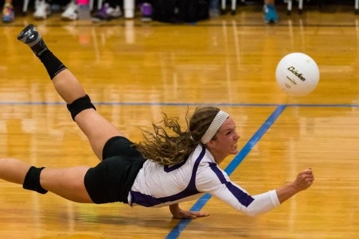
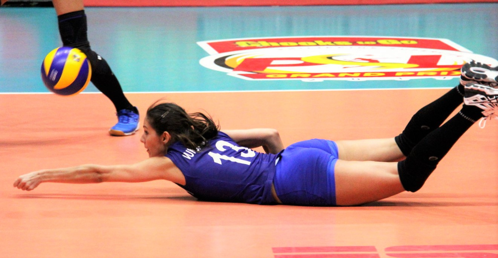
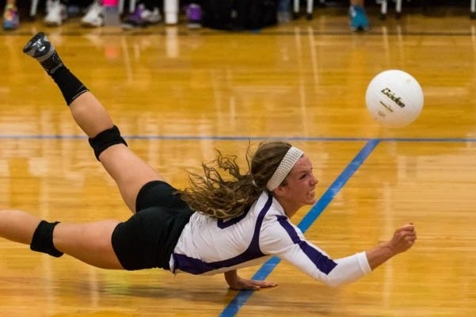
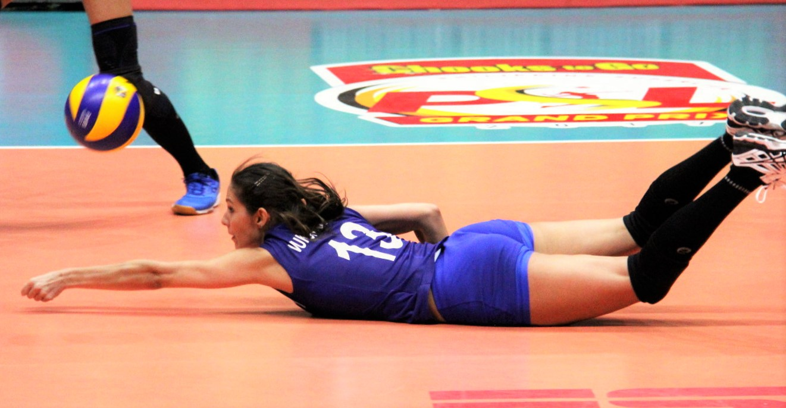

To perform a dolphin dive in volleyball, extend your body forward while keeping your arms and hands ready to play the ball, landing on your chest to minimize impact.
- Get Low and Prepare: As the ball approaches, lower your body by bending your knees and leaning forward. This position helps you prepare for the dive and keeps your center of gravity low.
- Extend Your Arms: Reach out with your arms in front of you, keeping your hands together to create a platform. This will help you make contact with the ball while diving.
- Jump Forward: Propel yourself forward by jumping off your feet. Aim to dive towards the ball, extending your body as far as possible. Your body should be parallel to the ground as you dive.
- Land on Your Chest: As you dive, allow your chest to make contact with the ground first. This helps distribute the impact and reduces the risk of injury. Your arms should be positioned to brace your fall, and your head should be lifted to avoid hitting the ground.
- Follow Through: After making contact with the ball, continue your motion by sliding on the floor. This helps you maintain control and prepares you for the next play. You can also roll to your side to get back on your feet quickly.
Youtube Tutorial

 


